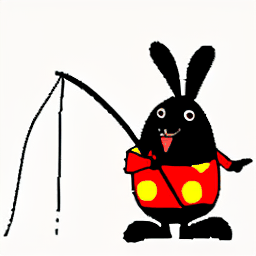
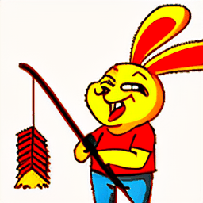
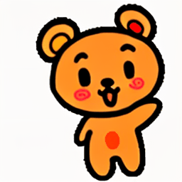
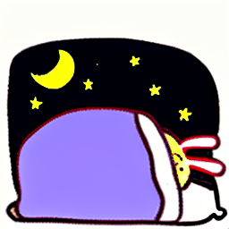
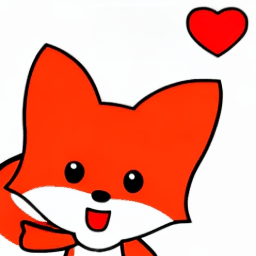
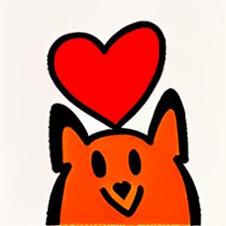
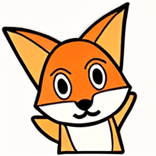
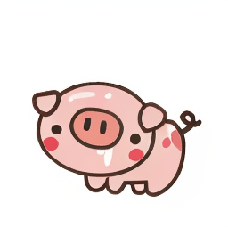
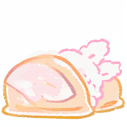
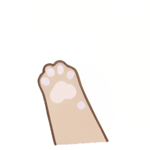

: A Large-scale Vision-language Sticker Dataset for Multi-frame Animated Sticker Generation
Abstract
As a common form of communication in social media, stickers win users’ love in the internet scenarios, for their ability to convey emotions in a vivid, cute, and interesting way. People prefer to get an appropriate sticker through retrieval rather than creation for the reason that creating a sticker is time-consuming and depends on rule-based creative tools with limited capabilities. Nowadays, advanced text-to-video algorithms spawn lots of general video generation systems for users to customize high-quality photo-realistic videos by only providing simple text prompts. However, creating the customized animated sticker, which has lower frame rates and more abstract semantics than video, is greatly hindered by difficulties in data acquisition and incomplete benchmarks. To facilitate the exploration of researchers in animated sticker generation (ASG) field, we firstly construct the currently largest vision-language sticker dataset named ``VSD2M'' at a two-million scale that contains static and animated stickers. Secondly, to enhance the performance of traditional video generation methods on ASG tasks with discrete characteristics, we come up with a Spatio Temporal Interaction (STI) layer that uses semantic interaction and detail preservation to alleviate the insufficient utilization of information. Moreover, we train baselines with several video generation methods (e.g., transformer-based, diffusion-based methods) on VSD2M and conduct a detailed analysis to establish systemic guidances on ASG task. To the best of our knowledge, this is the first large-scale benchmark for multi-frame animated sticker generation, and we hope that this work can give valuable inspiration for other scholars in intelligent creation.
VSD2M Dataset
Overview of data collection and processing, which can be divided into four stages: web crawling, data filtering, annotation and dataset spliting. During the data annotation process, we use manually labeled data to fine-tune different models to obtain high-quality semi-automatic annotation results.

Visual analysis of VSD2M. (a) Frequency count of top 25 trigger words. (b) Statistics of frame number, note that we only count multi-frame animated stickers. (c) Frequency count of top 35 words in descriptions. (d) Statistics of caption length.
Static information comparison of different vision-language sticker datasets.
STI Layer for Animated Sticker Generation
| Prompt | VideoLDM [1] | VideoFactory [2] | I2VGen-XL [3] | Ours |
| A cute rabbit setting off firecrackers |  |  | ||
| A little bear waving his hands up and down |  | |||
| A little man with a pair of rabbit ears is sleeping in the quilt with stars in the sky |  |
 |
 | |
| A cartoon little fox waving with a heart above his head |  |  |  |
Comparison with other methods
|  | ||||
|  | ||||
|  |  |
|||
 |
More results generated based on VSD2M
Challenges and Future Works
As a novel task that urgently needs to be explored, ASG task plays an important role in user interaction and chat communities. However, compared with video generation task in general fields, ASG task present some unique challenges:
Under the above challenges, there are also some corresponding opportunities in ASG field:
BibTeX
If you use our work in your research, please cite:
@misc{anonymous2024vsd2m,
title={VSD2M: A Large-scale Vision-language Sticker Dataset for Multi-frame Animated Sticker Generation},
author={Anonymous},
year={2024},
archivePrefix={arXiv},
primaryClass={cs.CV}}